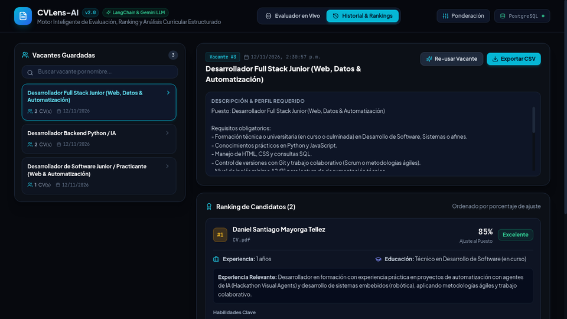

01. Production Pipeline
AI & Asynchronous Backend
Evaluador-Tecnico
AI-Assisted Candidate Evaluation & Backend Architecture
A structured technical evaluation platform designed to assess engineering candidates through automated workflows, code execution sandboxing, and AI-assisted scoring pipelines.
// SYSTEM ARCHITECTURE SPECIFICATION
Architecture
: Microservices / Modular Backend with Asynchronous Task Queues
Tech Stack
: Python, FastAPI, PostgreSQL, Redis, Docker, LLM Integrations
Core Focus
: Strict schema validation, background job processing, reproducible candidate metrics
